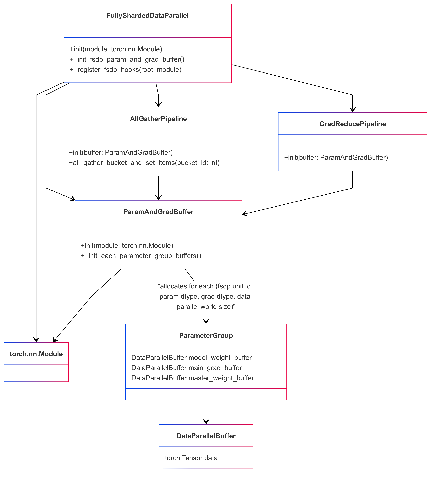

MCore 自定义 Fully Sharded Data Parallel (FSDP)
兼容性提示
在 M-Core 0.14 中，自定义 FSDP 的检查点实现已重构为基于 DTensor 的 torch.distributed.checkpoint，并更名为 Megatron FSDP。本文中相关部分已不再适用。
如何使用？
启用 MCore 自定义 FSDP 时需添加以下参数：
--use-megatron-fsdp
--data-parallel-sharding-strategy optim_grads_params
--no-gradient-accumulation-fusion
--use-distributed-optimizer
关键特性
- 分片策略：高效地对优化器状态、梯度与参数进行分片，显著降低内存占用。
- 通信与计算重叠：针对通信与计算并行执行进行了优化，可提升整体效率。
- 支持自动混合精度训练：兼容 BF16 O1/O2/O3 配方，以及 FP8 计算（FP32 参数）与 FP8 参数训练，便于灵活配置精度。
- 张量并行 (TP)、专家并行 (EP) 与上下文并行 (CP)：可与 TP、EP、CP 配置组合，支持大规模语言模型的高效扩展。
- 使用 Meta 设备进行分布式模型初始化：允许先在 meta 设备上初始化模型，再通过
Module.reset_parametersAPI 逐层初始化分布式权重缓冲区，有助于构建超大模型。
配置建议
1. 禁用 CUDA_DEVICE_MAX_CONNECTIONS
为保证 FSDP 通信与计算的完全并行化，应关闭环境变量 CUDA_DEVICE_MAX_CONNECTIONS。此操作能避免 CUDA 流中出现气泡（但可能会在一定程度上降低 TP 与 CP 的速度）。
2. 添加 --calculate-per-token-loss
在梯度分片模式下，建议在训练脚本中添加 --calculate-per-token-loss 参数。该参数可降低梯度缩放的频率，减少对 SM 资源的消耗，从而提升性能。
自定义 FSDP 设计
1. 概览
Megatron-Core 中的自定义 Fully Sharded Data Parallelism (FSDP) 旨在在训练大型语言模型时优化内存占用与性能。其核心设计原则包括：
- 面向大型语言模型优化：自定义 FSDP 针对拥有数十亿参数的模型进行了扩展优化，使大模型训练更加顺畅。
- 高效的内存使用：通过对优化器状态、梯度与模型参数进行策略性分片，大幅降低内存占用，使原本无法装入显存的模型得以训练。
- 高效工作流与通信计算重叠：设计上减少训练过程中的通信步骤，并最大化通信与计算的重叠，以提升效率、降低延迟。
- 支持 MCore 的高效训练方法：与 Megatron-Core 的高级并行技术（张量并行、专家并行、上下文并行）无缝集成，并支持自动混合精度训练，以进一步优化性能。
自定义 FSDP 的设计灵感来自 PyTorch FSDP Zhao, Yanli, et al. 以及 MCore 的分布式优化器。下面引用 PyTorch FSDP 的介绍，帮助理解自定义 FSDP 的核心概念。
在 DistributedDataParallel (DDP) 训练中，每个进程/工作者拥有一份模型副本并处理一批数据，最后通过 all-reduce 汇总不同工作者的梯度。DDP 会在所有工作者上复制模型权重与优化器状态。FSDP 是一种数据并行方式，会在 DDP rank 之间分片模型参数、优化器状态与梯度。
使用 FSDP 训练时，相比在所有工作者上使用 DDP，其 GPU 内存占用更小。这样可以在设备上容纳更大的模型或更大的批量，使训练特大模型成为可能。但这会增加通信量。通过重叠通信与计算等内部优化，可以降低通信开销。

注意：流程中处理的单位为“FSDP 实例 1：N 层”。FSDP 实例是最小的处理单元（也是 PyTorch Module），这意味着在使用完该模块（执行正向或反向）后即可安全释放其权重，不会有其他计算依赖这些权重。这一能力是 FSDP 逐层执行与节省内存策略的基础。FSDP 实例也被称为 Transformer 中的“亚层”，即 TransformerLayer。
2. 自定义 FSDP 中的主要概念
Megatron-Core 的自定义 FSDP 与分布式优化器紧密协同。FSDP 负责在前向与反向过程中收集参数及梯度，而分布式优化器负责参数更新与状态维护。
如下图展示了支撑 FSDP 的核心类与数据结构：

AllGatherPipeline.initialize_data_parallel_groups用于初始化数据并行通信组。AllGatherPipeline.build_all_gather_buckets与GradReducePipeline.build_reduce_buckets构建参数聚合和梯度归约的桶。AllGatherPipeline.schedule_all_gathers与GradReducePipeline.schedule_grad_reduce在训练过程中调度通信。
通过 ParamAndGradBuffer，自定义 FSDP 在参数收集与梯度归约时使用统一的缓冲结构，以便与分布式优化器共享。
3.1 在 Meta 设备上初始化模型
训练特大模型时，可先在 meta 设备上初始化模型。借助 PyTorch 的 reset_parameters API，可在构建 ParamAndGradBuffer 时逐层初始化权重。大多数 PyTorch 原生模块与 TransformerEngine 模块均支持此 API（例如 PyTorch Linear、TE LayerNormLinear）。
# Initialize model on the meta device
with torch.device("meta"):
model = GPTModel(config)
model = FullyShardedDataParallel(
transformer_config,
model,
ddp_config,
fsdp_unit_modules=[TransformerLayer, LanguageModelEmbedding],
)
重要注意事项：
1. 自定义模块：若模型中包含自定义模块，请确保其实现了 reset_parameters API。否则需在 CUDA 或 CPU 上强制初始化参数。
2. 张量初始化：若模型初始化时创建的张量未显式指定设备，则默认位于 meta 设备。为避免问题，应显式指定这些张量的设备。
4. 自定义 FSDP 与模型前向/反向传播的交互
自定义 FSDP 通过注册模块钩子、梯度钩子或在模块间插入函数实现 Fully Sharded Data Parallelism。在 PyTorch 模块的前向或反向传播过程中，需要在适当时机插入通信并管理参数与梯度。
模块钩子概览：
- 模块前向前钩子（module.register_forward_pre_hook）：在前向计算前取消参数分片。对于 FSDP 单元模块，还会添加 RegisterFSDPBackwardFunction，在模块反向完成后重新分片并归约梯度。
- 模块前向后钩子（module.register_forward_hook）：在前向计算后重新分片模型权重。
- 根模块反向前钩子（root_module.register_full_backward_pre_hook）：确保所有参数在反向前已重新分片，避免不必要的内存峰值，并将所有模块标记为 TrainingState.PRE_BACKWARD。
- 模块反向前钩子（module.register_full_backward_pre_hook）：在反向计算前取消模型权重分片。
- 根模块反向后钩子（torch.autograd.Variable._execution_engine.queue_callback）：确保反向过程中所有梯度均被正确处理并可用。
梯度归约流水线维护一个从梯度到 FSDP 参数组的映射。一旦某个参数组中的全部梯度就绪，就会启动梯度归约。该流程假设模型梯度始终按一定顺序生成（为 module.parameters() 的逆序），否则 FSDP 会维护过多参数组的梯度缓冲区，导致额外的内存开销。
4.1 针对激活重计算的优化
启用激活重计算会导致同一模块在反向传播时先执行前向函数再执行反向函数，从而触发两次权重取消分片与两次重新分片。如果能够识别这是一次前向 + 反向操作，就可以分别只执行一次取消分片与一次重新分片。
为实现该目的，我们使用 training_state 跟踪模型状态，包括 FORWARD、PRE_BACKWARD、POST_BACKWARD、IDLE。需要注意的是，反向前钩子先于前向前钩子执行。在反向前钩子中完成权重取消分片后，将状态标记为 PRE_BACKWARD，随后前向前钩子检测到该标记便不会再次取消分片。类似地，前向后钩子先于反向后函数执行，通过在前向后钩子中检查 PRE_BACKWARD 标记，可避免重复分片。
5. 自定义 FSDP 的内存机制与特性
FSDP 可以对模型参数、梯度、优化器状态，以及混合精度训练中的高精度主权重实现完全分布式化，除激活内存外几乎所有部分都被分散。然而 FSDP 仍可能遇到内存问题。
FSDP 会频繁执行权重的取消分片与重新分片，可能导致内存频繁申请与释放，造成张量未能及时释放，从而引发内存峰值（甚至 OOM）、PyTorch 内存分配器缓存崩溃，以及大量 cudaMalloc/cudaFree 调用，这些问题会显著拖慢系统。
通常可以通过 tensor._typed_storage()._resize_(0) 立即释放存储空间，以解决张量未及时释放的问题。自定义 FSDP 在 AllGatherPipeline 与 GradReducePipeline 中提供接口，可将参数聚合与梯度归约的临时缓冲分配器替换为 StorageResizeBasedBucketAllocator，将释放操作替换为 tensor._typed_storage()._resize_(0)。
PyTorch 内存分配器缓存崩溃是更复杂的问题，常在实际内存使用接近 GPU 上限时出现，导致性能下降。要缓解该问题，应尽量避免频繁触发 GPU 内存上限。使用自管理分配器（如 RotaryBucketAllocator）也是潜在方案，但需注意 RotaryBucketAllocator 尚未成熟。